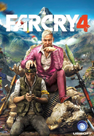

-
INFORMATION
-
RATINGS INFO
-
WHERE TO BUY

FarCry 4
First Released Nov 17, 2014
In Far Cry 4, players find themselves in Kyrat, a breathtaking, perilous and wild region of the Hima layas struggling under the regime of a despotic self-appointed king.
20% OFF!
$59.96
BUY IT NOW